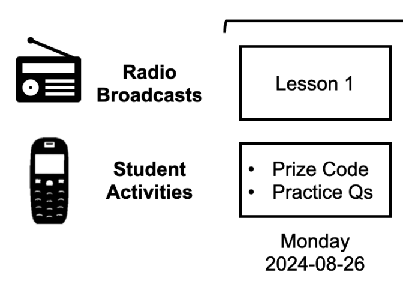
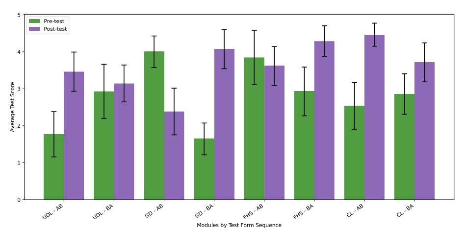
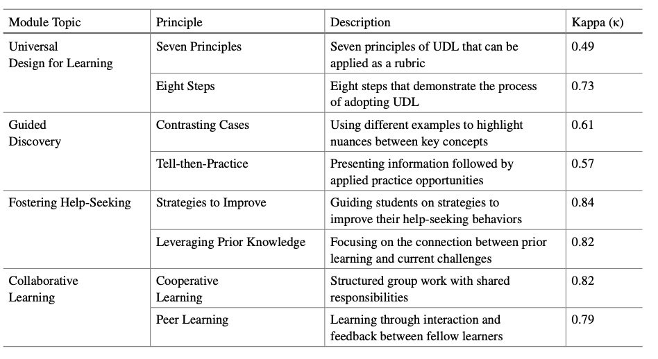
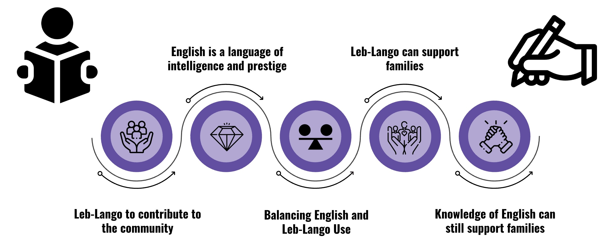
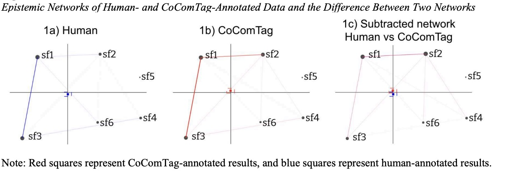
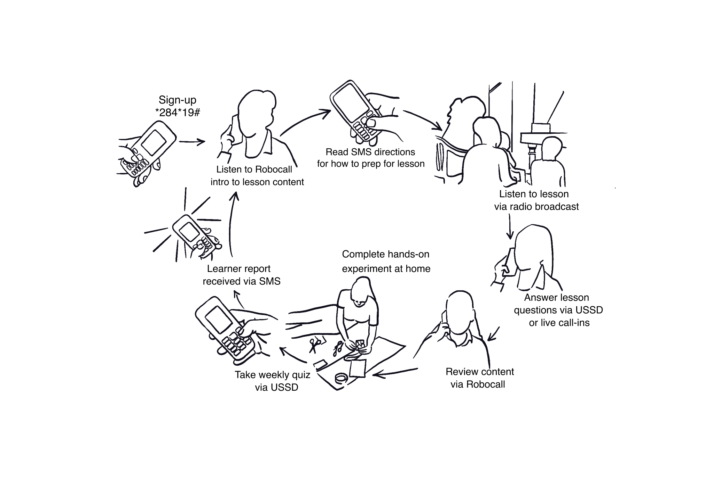
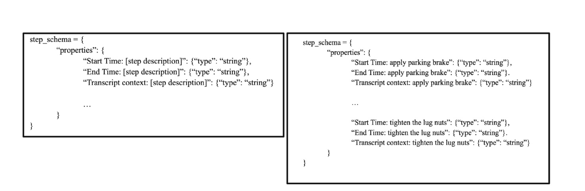
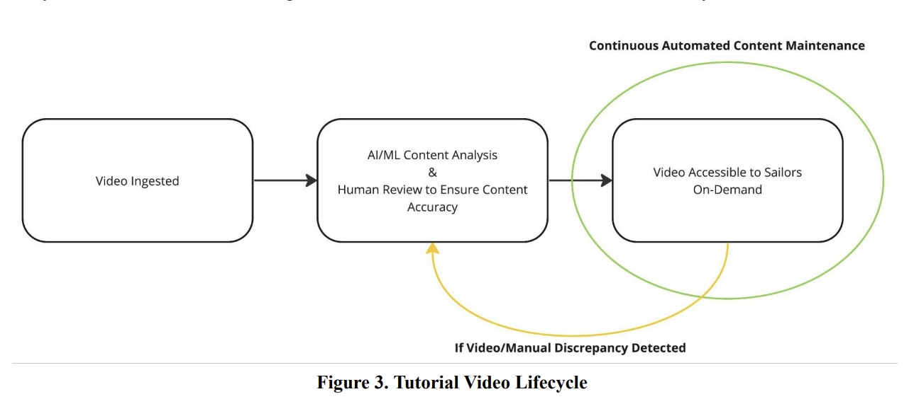
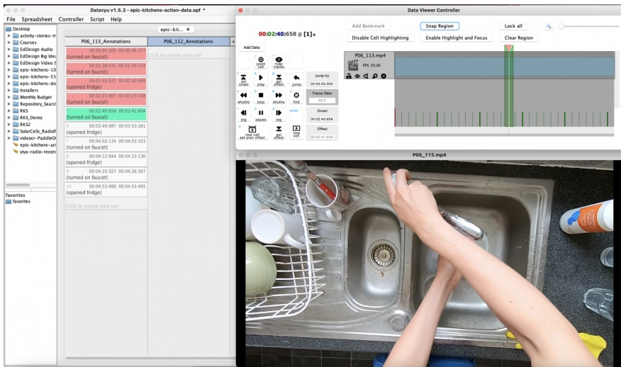

|
|
Christine Kwon
Welcome to my personal website! I am a fourth year PhD student in the Human Computer Interaction Institute (HCII) at Carnegie Mellon University advised by Dr. John Stamper and Dr. Amy Ogan .
My research interests center on educational technologies (EdTech) and learning sciences .
I am most passionate about improving access to meaningful education through accessible educational technologies for marginalized communities of learners globally!
Through my research, I aim to work with educational technologies globally and collaborate with other educators and researchers on providing meaningful, affordable, and high-quality education by leveraging the functionalities of EdTech.
My work has primarily focused on how low-infrastructure and contextually aligned technologies can support out-of-school learning for marginalized learners.
Through my research, I aim to work with educational technologies globally and collaborate with other educators and researchers on providing meaningful, affordable, and high-quality education by leveraging the functionalities of EdTech!
I am highly interested in research collaborations and connecting with those who share my passion for EdTech research! Please feel free to reach out to discuss potential collaborative opportunities.
📧 Email /
💼 CV /
🎓 Google Scholar
|
|

|
Validating a New Approach for Measuring Student Engagement in Remote, Low-Infrastructure Learning Environments
Michael W. Asher, Christine Kwon , John Stamper, Amy Ogan, Paulo F. Carvalho
Learning@Scale, 2025
Paper
In this paper, we introduce a novel solution for studying real-time student engagement with offline learning technology. We present "Prize Codes" as a novel method for measuring student engagement with mobile-learning broadcasts.
|
|

|
Integrating Generative AI into Instructional Design Practice: Effects on Graduate Student Learning and Self-Efficacy
Steven Moore, Lydia Eckstein, Christine Kwon , John Stamper
ECTEL, 2025
Paper
This study examines genAI's impact on student learning and self-efficacy within a graduate course where students created eight microlessons incorporating distinct learning science principles through an A/B experimental design.
|
|

|
Generative AI in Instructional Design Education: Effects on Novice Microlesson Quality
Steven Moore, Lydia Eckstein, Christine Kwon , John Stamper
AIED, 2025
Paper
This study investigates the integration of genAI into the microlesson creation process for novice instructional designers. Conducted within a graduate-level course focusing on instructional design and learning engineering, we examined how using genAI influences the quality of student-created microlessons.
|
|

|
Navigating Local versus Colonial Languages of Instruction in Out-of-School Contexts: Insights from a Randomized Controlled Trial in Uganda
Christine Kwon , Yuchen Yao, Yuhan Che, John Stamper, Amy Ogan
ICLS, 2025
Paper
We studied a randomized controlled trial (RCT) in a rural region within Northern Uganda, comparing a local versus colonial language as a medium of instruction in an engineering course for out-of-school learners.
|
|

|
Capturing Collaborative Competency with GPT-4o and ENA
Yoonjae Lee, Christine Kwon, Sarah Seoh, Gahgene Gweon, John Stamper, Carolyn P Rosé
CSCL, 2025
Paper
In this study, we develop CoComTag, an LLM-powered approach using GPT-4o that captures students' collaborative competency.
|
|

|
Investigating Demographics and Motivation in Engineering Education Using Radio and Phone-Based Educational Technologies
Christine Kwon, Darren Butler, Judith Odili Uchidiuno, John Stamper, Amy Ogan
CHI, 2024
Paper
We analyzed log interaction data from an existing offline radio-and-phone based course to examine how participation was associated with changes in learners’ STEM motivations, engineering mindsets, and income mobility. We further investigated how learner outcomes related to initial motivation, demographic characteristics, and access to technology.
|
|

|
A Schema-Based Approach to the Linkage of Multimodal Learning Sources with Generative AI
Christine Kwon, James King, John Carney, John Stamper
AIED, 2024
Paper
Our work provides a unique LLM-based multimodal pipeline to interpret and verify task-related key steps in a video within organized knowledge schemas, in which demonstrated video steps are automatically extracted, systematized, and validated in comparison to a text manual of official steps.
|
|

|
AI/ML-Driven Content Repository Maintenance
John Carney, Nancy Belmont, James King, John Stamper, Christine Kwon, Joanie Lam, Anahita Sehga
I/ITSEC, 2022
Paper
In this work, we introduce an instructional content repository, a "YouTube for the Navy" that makes crucial content easily accessible and allows repository maintenance to keep content accurate and up-to-date. Repository maintenance can be laborious and prone to human error.
|
|
|
Learning analytics for last mile students in Africa
Christine Kwon, Ren Butler, John Stamper, Amy Ogan, A Forcier, E Fitzgerald, S Wambuzi
LAK, 2022
Paper
This work describes an educational technology system, Yiya Air Science, to reach “last mile” students in Africa (specifically rural Uganda) where access to basic computers or smartphones is rare. Courses are deployed on a system of radio broadcast and basic texting phones (USSD).
|
|

|
Multimodal Data Support in Knowledge Objects for Real-time Knowledge Sharing
Christine Kwon, John C. Stamper, James King, Joanie Lam, John Carney
CrossMMLA Workshop @ LAK, 2022
Paper
To enhance the process of knowledge sharing, we propose an advanced ontological knowledge structure which we denote as a Knowledge Object (KO) defined around a particular task of action.
|
|
{kind=link}